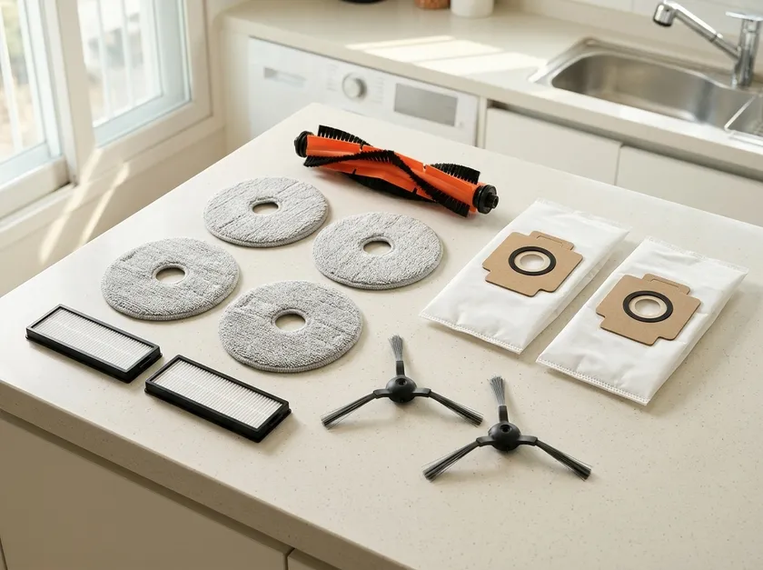

에코백스 (ECOVACS)
온수 세척·열풍 건조 스테이션용 샤오미 X20 MAX 원형 걸레·더스트백 1년 소모품 세트
글·구성: 제이상점 · 기종별 1:1 호환 실물 점검 · 교체 주기 비교표 · 스마트스토어 패키지 안내

핵심 관리 · 선택 체크포인트
- 고온 물걸레 세척과 열풍 건조로 주방 바닥까지 깔끔하게 닦아주는 샤오미 로봇청소기 X20 MAX라도 본체 먼지통 안의 슬림형 헤파필터는 따로 분리해 말려 주어야 배기구 냄새를 막을 수 있습니다.
- 슬림형 블랙 프레임 필터 24시간 교대 건조와 오렌지 브러시 점검: 스테이션 열풍 건조는 하단 원형 걸레만 말려 주므로, 물로 헹군 본체 먼지통 필터는 그늘에서 24시간 바짝 말리고 그사이 마른 예비 필터를 끼워 두세요.
- 샤오미 로봇청소기 X20 MAX 1년 세트 핵심 소모품 관리표: X20 MAX 본체와 올인원 스테이션의 성능을 유지하는 부품별 점검 기준입니다.
- 보유 모델명이 샤오미 X20 MAX인지 확인한 뒤 상세페이지에서 전용 1년 세트를 선택해 주세요.
- 다용도실 카운터 사전 점검과 베란다 와이어 건조 랙 통풍: 다용도실 카운터에 오렌지 메인브러시와 원형 걸레 4장, 슬림형 필터, 크라프트 더스트백을 꺼내 점검하고 세척한 부품은 베란다
실물 부품 디테일 · 관리 구성 이미지



부품 규격 · 점검 기준표
| 부품 구분 | 샤오미 X20 MAX 전용 규격 | 점검 및 교체 포인트 |
|---|---|---|
| 슬림형 블랙 프레임 필터 | 가로형 직사각 워셔블 헤파필터 | 물세척 후 24시간 완전 건조 뒤 예비 필터와 1:1 교대 |
| 오렌지 V자 메인·3암 브러시 | 주황·검정 롤러 브러시 + 3갈래 사이드브러시 | 양끝 회전축 캡 분리 청소 및 솔 마모 확인 |
| 원형 회전 걸레·더스트백 | 그레이 극세사 원형 패드 + 크라프트 칼라 봉투 | 걸레 2매 동시 교체 및 더스트백 슬롯 밀착 체결 |
💡 교체 주기가 겹치는 필터·브러시·물걸레·더스트백은 단품 배송비를 여러 번 내기보다 샤오미 X20 MAX 기간별 세트(3개월·6개월·1년)로 미리 구비해 두면 물세척 후 24시간 교대 건조까지 끊김 없이 관리할 수 있습니다.
자주 묻는 질문 (FAQ)
Q. 샤오미X20MAX의 슬림형 블랙 프레임 필터 규격과 관리 기준은 무엇인가요?
A. 가로형 직사각 워셔블 헤파필터 규격을 사용하며, 물세척 후 24시간 완전 건조 뒤 예비 필터와 1:1 교대 기준으로 점검·교체하면 청소 효율을 안정적으로 유지할 수 있습니다.
Q. 샤오미X20MAX의 오렌지 V자 메인·3암 브러시 규격과 관리 기준은 무엇인가요?
A. 주황·검정 롤러 브러시 + 3갈래 사이드브러시 규격을 사용하며, 양끝 회전축 캡 분리 청소 및 솔 마모 확인 기준으로 점검·교체하면 청소 효율을 안정적으로 유지할 수 있습니다.
Q. 샤오미X20MAX의 원형 회전 걸레·더스트백 규격과 관리 기준은 무엇인가요?
A. 그레이 극세사 원형 패드 + 크라프트 칼라 봉투 규격을 사용하며, 걸레 2매 동시 교체 및 더스트백 슬롯 밀착 체결 기준으로 점검·교체하면 청소 효율을 안정적으로 유지할 수 있습니다.
제이상점 1:1 검수 추천 패키지 · 구매 안내
메인 추천 구성
대표 구성 참고가 68,400원대 (옵션·쿠폰별 스마트스토어 결제 화면 기준)
1년 세트 (세제 미포함)6개월 세트 (세제 미포함)3개월 세트 (세제 미포함)
![[호환] 샤오미 X20 Pro 소모품 물걸레 더스트백 브러쉬 필터 제이상점 1년 패키지](../../assets/img/xiaomi-x20-pro-product-87b7e4a8.webp)
함께 많이 찾는 보충 구성
대표 구성 참고가 63,400원대 (옵션·쿠폰별 스마트스토어 결제 화면 기준)
1년 세트 (세제 미포함)6개월 세트 (세제 미포함)3개월 세트 (세제 미포함)
☑️ 주문 전 확인해 두면 좋은 제이상점 안심 포인트
· 기종별 1:1 전용 규격 검수: 모델명·연식에 맞는 호환·정품 구성을 검수해 오주문 불안을 줄였습니다.
· 해외직배송 미리 주문 팁: 중국 구매대행·해외직배송 상품이므로 마지막 여분 1개를 꺼내 쓰는 시점에 개인통관고유부호와 함께 여유 있게 주문해 두시면 훨씬 경제적인 비용으로 끊김 없이 교체하실 수 있습니다.
· 기종별 1:1 전용 규격 검수: 모델명·연식에 맞는 호환·정품 구성을 검수해 오주문 불안을 줄였습니다.
· 해외직배송 미리 주문 팁: 중국 구매대행·해외직배송 상품이므로 마지막 여분 1개를 꺼내 쓰는 시점에 개인통관고유부호와 함께 여유 있게 주문해 두시면 훨씬 경제적인 비용으로 끊김 없이 교체하실 수 있습니다.
📖 더 많은 가정 내 사용 스토리와 상세 후기가 궁금하시다면
📱 네이버 블로그 모바일 원문 보기 ↗